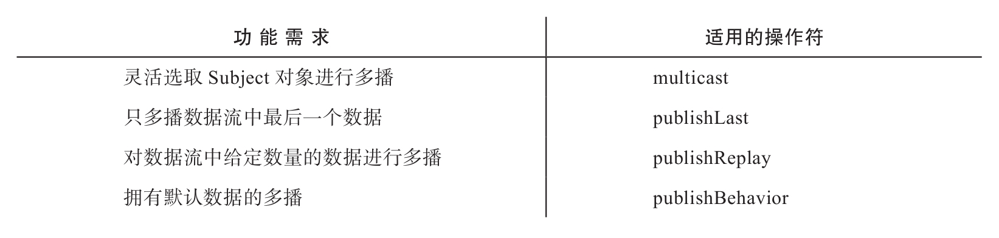

本章介绍很常用的一种RxJS应用方法——多播（multicast），多播就是让一个数据流的内容被多个Observer订阅。
为了实现多播，需要引入一种特殊的类型Subject，在RxJS中除了Subject这个类型，还有如下几个扩充的形态：
·BehaviorSubject
·ReplaySubject
·AsyncSubject
同时，RxJS还提供一系列操作符用于支持多播，下面列举了各种场景下使用的多播类操作符：
